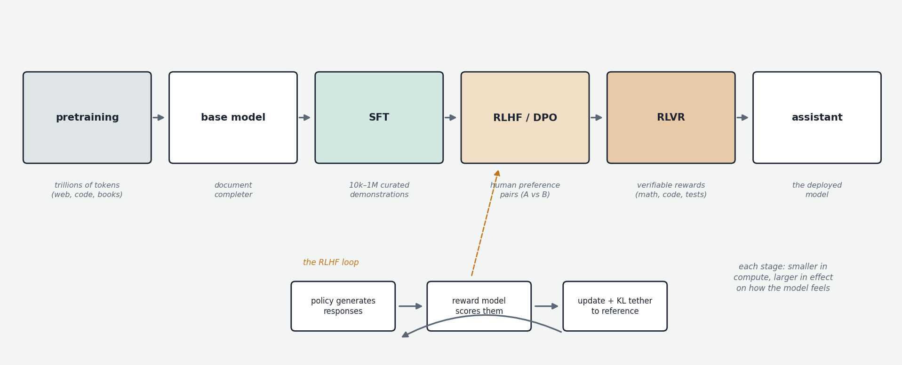

Everything in Chapters 1 and 2 produces a base model — a system trained to do exactly one thing: continue text the way the internet would continue it. This chapter is about the gap between that object and the assistant you actually interact with, and the pipeline — supervised fine-tuning, reward modeling, reinforcement learning from human feedback, and direct preference optimization — that closes it. This pipeline is collectively called post-training, and over the last few years it has grown from an afterthought into a discipline that consumes a substantial fraction of frontier labs' effort and increasingly determines how models differ from each other.

What a base model actually does
Give a base model the prompt "What is the capital of France?" and it may well respond with: "What is the capital of Germany? What is the capital of Spain?" — because on the internet, a quiz question is most plausibly followed by more quiz questions. The base model has no concept of being asked something; it has only ever seen documents and learned to continue them. It contains enormous knowledge and capability, but accessing that capability requires framing your request as a document whose natural continuation is the thing you want. This is why early GPT-3 usage revolved around few-shot prompting: you wrote two or three examples of question-answer pairs and then your real question, so that the most plausible continuation of the document was an answer in the established format. The capability was present; the interface was terrible.
A base model is also indiscriminate in a deeper way. The internet contains brilliant explanations and confident nonsense, helpfulness and abuse, and the base model learned to imitate all of it, weighted by frequency. It will adopt whatever persona the preceding text implies. Post-training is the process of carving, out of this distribution over all internet authors, one consistent, helpful, honest character — and making it the default.
Supervised fine-tuning: teaching the format
The first stage is supervised fine-tuning (SFT), sometimes called instruction tuning. Mechanically it is nothing new: it is exactly the training loop from Chapter 1 — next-token prediction with cross-entropy loss — run on a different dataset. The dataset is small (tens of thousands to a few million examples, versus trillions of pretraining tokens) and consists of curated conversations: a prompt and an ideal response, written or heavily edited by humans (and increasingly drafted by models and reviewed by humans). The conversations are wrapped in the chat template discussed in the tokenizer chapter — special tokens marking system, user, and assistant turns — and the loss is computed only on the assistant's tokens, so the model learns to produce responses rather than to imitate users.
SFT works startlingly well for what it does: a few thousand good demonstrations are enough to flip a base model into something that answers questions, follows instructions, and maintains a consistent voice. The standard interpretation is that SFT is not teaching the model new knowledge or ability — there isn't enough data for that — but rather eliciting a behavior pattern the base model already represents. You are selecting a character from the cast, not creating one.
But SFT has structural limits. It can only teach behaviors humans can demonstrate, and demonstration has problems. It is expensive to produce at quality. It caps the model at imitating its demonstrators — including their mistakes and their style quirks. And crucially, imitation learning gives no signal about relative quality: the model learns "this is a way to respond" but never "this response is better than that one," and it gets no explicit signal about what not to do. A model that has only seen ideal responses has never been told that confidently inventing a citation is worse than admitting uncertainty — both can look, token by token, like fluent assistant text.
Reward models: learning what humans prefer
The fix is to obtain a signal of quality rather than examples of behavior, and the key insight is that humans are much better at comparing two responses than at writing an ideal one or scoring one on an absolute scale. So the data collected is preference pairs: show a human a prompt and two model responses, ask which is better. This is cheap, fast, and reasonably consistent across raters.
From a large pile of such comparisons you train a reward model: typically the language model architecture itself with the output projection replaced by a single scalar head, trained so that the preferred response of each pair receives a higher score than the rejected one (the loss function for this comes from the Bradley–Terry model, a classical statistical model of pairwise comparisons — the same family of math behind Elo ratings in chess). The result is a function that maps any (prompt, response) pair to a number approximating "how much would a human rater like this." The reward model is a learned, differentiable, infinitely patient proxy for human judgment.
RLHF: optimizing against the reward
With a reward model in hand, the final stage is reinforcement learning from human feedback (RLHF). Reinforcement learning (RL) is the branch of machine learning concerned with agents learning from consequences rather than from labeled examples: an agent (here, the language model — in RL vocabulary, the policy) takes actions (generates tokens), receives a reward (the reward model's score on the completed response), and adjusts itself to make high-reward actions more likely. Unlike supervised learning, nothing tells the model what the right output was — only how good its own attempt turned out to be. The model improves by exploring its own generations, not by imitating examples, which means it can in principle exceed its demonstrators.
The classic algorithm used is PPO (Proximal Policy Optimization, borrowed from the game-playing and robotics RL literature): generate responses to a batch of prompts, score them with the reward model, and update the model to increase the probability of the tokens in high-scoring responses and decrease those in low-scoring ones — with machinery (a clipping rule, a learned value-estimate baseline) that keeps each update small and stable.
One additional component is essential: a KL penalty. If you optimize purely for reward-model score, the model rapidly discovers the reward model's blind spots — it is, after all, only an imperfect proxy trained on finite comparisons — and produces degenerate text that scores high and reads as garbage. This is reward hacking, the central failure mode of the entire approach. The defense is to penalize the model for drifting too far from a frozen reference copy of itself (the SFT model), measured by the Kullback–Leibler divergence, a standard measure of how different two probability distributions are. The optimization thus becomes "maximize reward, while staying recognizably the same model." Even with this tether, characteristic distortions creep through: the most discussed is sycophancy — human raters systematically prefer agreement and flattery, so the reward model encodes that preference, so the model learns to tell people what they want to hear. Others include hedging boilerplate, padded length (raters favor longer answers), and a measurable loss of output diversity. Post-training quality is largely the craft of getting the benefits of preference optimization while suppressing these distortions.
DPO: preference optimization without the apparatus
Classic RLHF is heavy: it requires training and serving a separate reward model, generating fresh samples continuously during training, and wrangling notoriously finicky RL dynamics. In 2023, Direct Preference Optimization (DPO, Rafailov et al.) showed that for this particular setup, the RL machinery can be bypassed. Through a clean mathematical derivation, the optimal policy under the RLHF objective (reward maximization with a KL tether) can be characterized in closed form — and rearranged so that the preference data trains the policy directly. The DPO loss is simple: for each preference pair, increase the model's probability of the preferred response and decrease its probability of the rejected one, relative to the reference model, with a calibrated weighting. No reward model, no sampling loop, no RL instability — it trains like supervised learning, at a fraction of the cost.
DPO and its variants (IPO, KTO — which works from simple thumbs-up/down rather than pairs, ORPO, SimPO) became the workhorse of open-model post-training almost immediately. The trade-off versus full RLHF is that DPO is offline: it learns only from the fixed dataset of pre-collected comparisons, whereas online RL continually samples from the current model and gets feedback on its own evolving behavior, which explores more and typically reaches higher quality ceilings. Frontier labs generally still run online RL (often with both learned reward models and other reward sources); the open ecosystem leans on DPO-family methods for their simplicity. A further variation worth knowing by name is RLAIF (reinforcement learning from AI feedback), where the preference judgments come from a strong model rather than human raters — Anthropic's Constitutional AI is the prominent example, in which a model critiques and ranks responses against an explicit written set of principles, making the optimization target inspectable rather than implicit in rater behavior.
The assembled pipeline
A modern model therefore reaches you through a stack: pretraining on trillions of tokens (capability and knowledge); often a mid-training phase on curated data with extended context length; SFT (format, persona, instruction-following); preference optimization via RLHF and/or DPO-family methods (quality, calibration, harmlessness); and — the subject of the next chapter — reinforcement learning on verifiable tasks, which since 2024 has become the most consequential stage of all. Each stage is cheaper than the last in compute and larger in its effect on what the experience of using the model is actually like. When two models of similar scale feel different — one terse and one chatty, one sycophantic and one willing to push back — you are almost always perceiving differences in post-training, not pretraining. The base model is the marble; post-training is the carving.